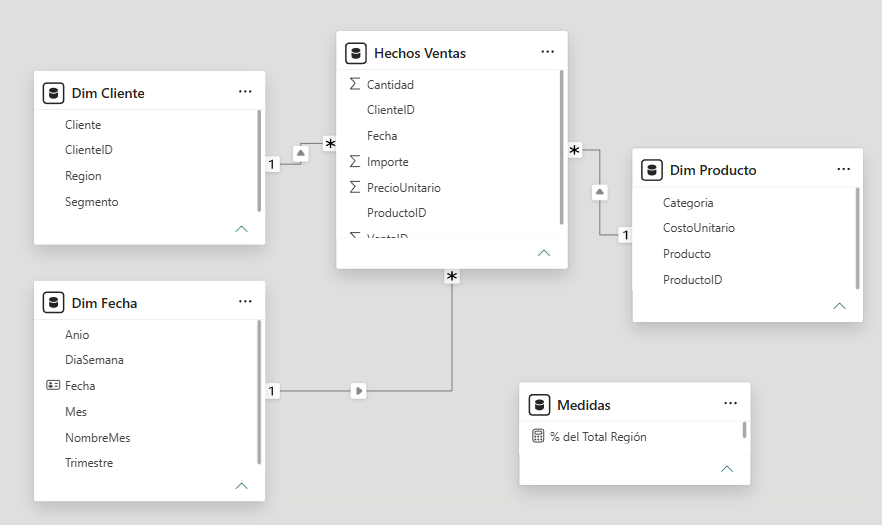
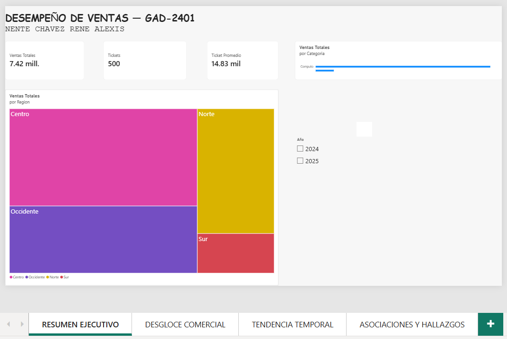
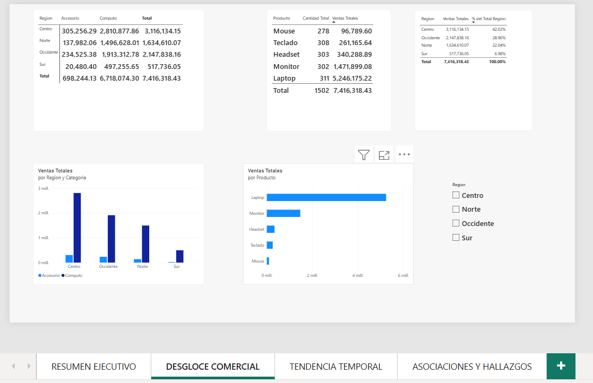
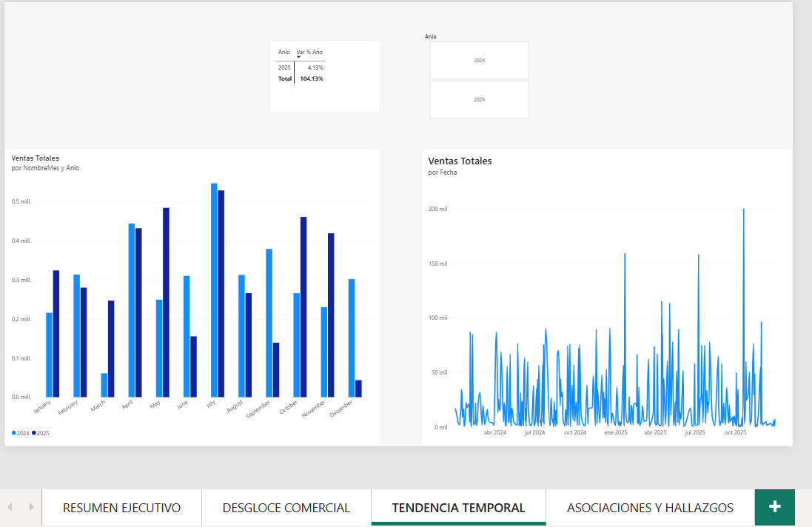
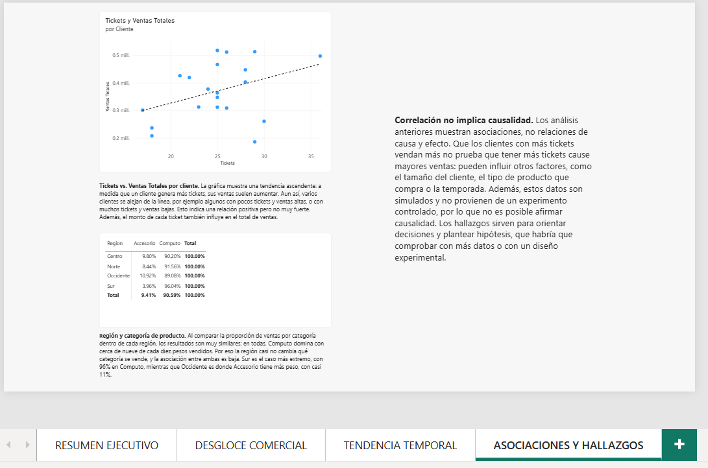

Ventas Totales
$7,416,318.43
Suma del importe de todas las ventas entre 2024 y 2025.
Práctica integradora · Power BI
Un recorrido desde los archivos CSV hasta un informe de cuatro páginas, con modelo en estrella, medidas DAX y análisis de asociación.
La empresa analizada vende equipos de cómputo y accesorios a 20 clientes repartidos en cuatro regiones. Se dispone de 500 ventas registradas entre 2024 y 2025.
Pregunta que guía el análisis: ¿en qué regiones y categorías de producto debería enfocar la empresa su esfuerzo comercial el próximo año?
Quién usará el tablero: la gerencia comercial, que decide dónde invertir tiempo, inventario y promociones.
$7,416,318.43
Suma del importe de todas las ventas entre 2024 y 2025.
500
Cantidad de ventas únicas, contando cada ticket una sola vez.
$14,832.64
Cuánto se vende en promedio por ticket: Ventas Totales ÷ Tickets.
La información viene de cuatro archivos CSV. hechos_ventas.csv guarda cada venta, y tres tablas de apoyo describen a los productos, los clientes y las fechas: dim_producto.csv, dim_cliente.csv y dim_fecha.csv. Después de la limpieza quedan 500 tickets, 5 productos, 20 clientes y fechas de 2024 a 2025.
Antes de analizar, cada consulta se revisó en el Editor de Power Query: se asignaron los tipos de datos adecuados, se pusieron nombres claros a las consultas y se verificó la presencia de nulos y de columnas que no hacían falta.
| Qué se revisó | En qué tablas | Hallazgo y solución |
|---|---|---|
| Tipos de datos | Todas las consultas | Se confirmó que cada columna tuviera el tipo correcto: fechas como Fecha, montos y unidades como números, y las descripciones (cliente, región, producto) como texto. |
| Valores nulos | Todas las consultas | En la vista de calidad de columna no aparecieron vacíos ni errores relevantes, y los totales coinciden con los de control. |
| Columnas sobrantes | Todas las consultas | Todas las columnas cargadas se usan en el modelo o en las medidas, por lo que no fue necesario quitar ninguna. |
Se armó un modelo en estrella. La tabla Hechos Ventas queda al centro y recibe relaciones de uno a muchos desde Dim Cliente, Dim Producto y Dim Fecha. Esta última se marcó como tabla de fechas para que funcionen las medidas de tiempo.

| Medida | Para qué sirve |
|---|---|
| Ventas Totales | Suma el importe de las ventas. |
| Tickets | Cuenta las ventas únicas. |
| Ticket Promedio | Calcula el monto promedio por ticket. |
| Cantidad Total | Suma las unidades vendidas. |
| Ventas Año Anterior | Trae las ventas del mismo periodo un año antes. |
| Var % Año | Mide cuánto crecieron o cayeron las ventas frente al año previo. |
| % del Total Región | Indica qué parte de las ventas aporta cada región. |
| % por Fila Categoría | Muestra la mezcla de categorías dentro de cada región. |
Las dos medidas de porcentaje usan ALL para quitar el filtro de la dimensión y así comparar contra el total:
% del Total Región =
DIVIDE([Ventas Totales],
CALCULATE([Ventas Totales], ALL('Dim Cliente'[Region])))
% por Fila Categoría =
DIVIDE([Ventas Totales],
CALCULATE([Ventas Totales], ALL('Dim Producto'[Categoria])))Control de totales: el modelo reproduce los valores de referencia de la práctica: $7,416,318.43 en ventas y 500 tickets.
El informe de Power BI se organiza en cuatro páginas. Aquí se muestra una captura de cada una.




| Región | Ventas | % del total |
|---|---|---|
| Centro | $3,116,134.15 | 42.02% |
| Occidente | $2,147,838.16 | 28.96% |
| Norte | $1,634,610.07 | 22.04% |
| Sur | $517,736.05 | 6.98% |
| Producto | Unidades | Ventas | % del total |
|---|---|---|---|
| Laptop | 311 | $5,246,175.22 | 70.74% |
| Monitor | 302 | $1,471,899.08 | 19.85% |
| Headset | 303 | $340,288.89 | 4.59% |
| Teclado | 308 | $261,165.64 | 3.52% |
| Mouse | 278 | $96,789.60 | 1.31% |
Las unidades vendidas son parecidas entre los cinco productos (de 278 a 311), pero el dinero no: la laptop sola genera cerca de siete de cada diez pesos, porque su precio es mucho más alto.
Las ventas de 2025 fueron 4.13% mayores que las de 2024. En la comparación mensual, julio es el punto más alto de ambos años. En cambio, septiembre y diciembre de 2025 quedan muy por debajo de los mismos meses de 2024.
En el gráfico de dispersión cada punto es un cliente. La línea de tendencia sube, de modo que los clientes con más tickets suelen acumular más ventas. Aun así, hay clientes que se separan bastante de la línea: algunos compran poco pero gastan mucho, y otros hacen muchas compras de monto bajo. Por eso la relación es positiva, de débil a moderada. El número de tickets ayuda a explicar las ventas, pero no es el único factor; también pesa el monto de cada compra.
Para ver si la categoría depende de la región, se calculó el porcentaje de cada categoría dentro de cada región.
| Región | Accesorio | Computo |
|---|---|---|
| Centro | 9.80% | 90.20% |
| Norte | 8.44% | 91.56% |
| Occidente | 10.92% | 89.08% |
| Sur | 3.96% | 96.04% |
| Total | 9.41% | 90.59% |
La mezcla es casi la misma en las cuatro regiones: Computo ronda el 90% y Accesorio el 10%. Es decir, saber en qué región está un cliente casi no dice qué categoría compra; las variables parecen independientes. Sur se aparta un poco, con 96% en Computo.
Los resultados anteriores describen patrones, no causas. Que los clientes con más tickets vendan más no demuestra que los tickets provoquen esas ventas: el tamaño del cliente o su frecuencia de compra podrían influir en ambas variables al mismo tiempo. Además, los datos son simulados y no vienen de un experimento controlado. Por eso estos hallazgos sirven para formular hipótesis y no para afirmar relaciones de causa y efecto.
Aquí puedes descargar el archivo .pbix con el modelo y el informe completos.